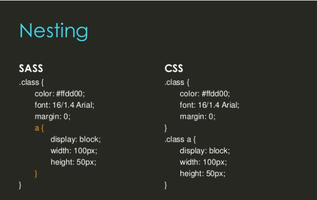

Nesting
In addition to variables, Sass allows you to nest your CSS.
Nesting CSS will allow for a clear visual representation of code
hierachy. Nesting code will allow you to quickly navigate a
document and understand what the code is doing. It is best
practice to avoid overly nested rules. The reason for this is that
once the Sass is compiled into Css, it could result in overly
complicated code which may prove to be unmaintable.

Partials
Sass also allows for the use of partials. Implemting a partial
allows the developer to modularize code. Typically a css file
could contain hundred to thousands of lines of code, all of which
would be representative of header, body, footer, etc.. With sass
you can set each component apart.... for example _header.scss,
_body.scss, and _footer.scss. The underscore lets Sass know that
the file is onl a partial file and that it should not be generated
into a css file. Sass partials are used with the @import
directive.